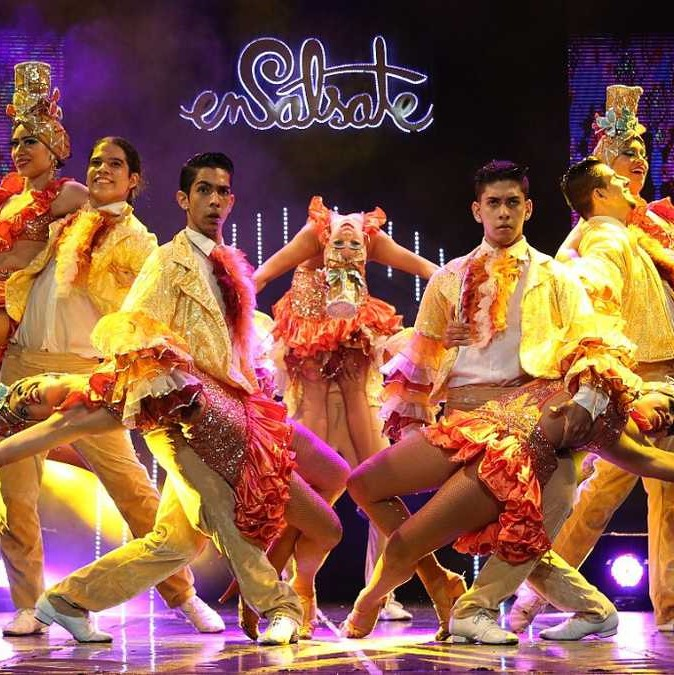
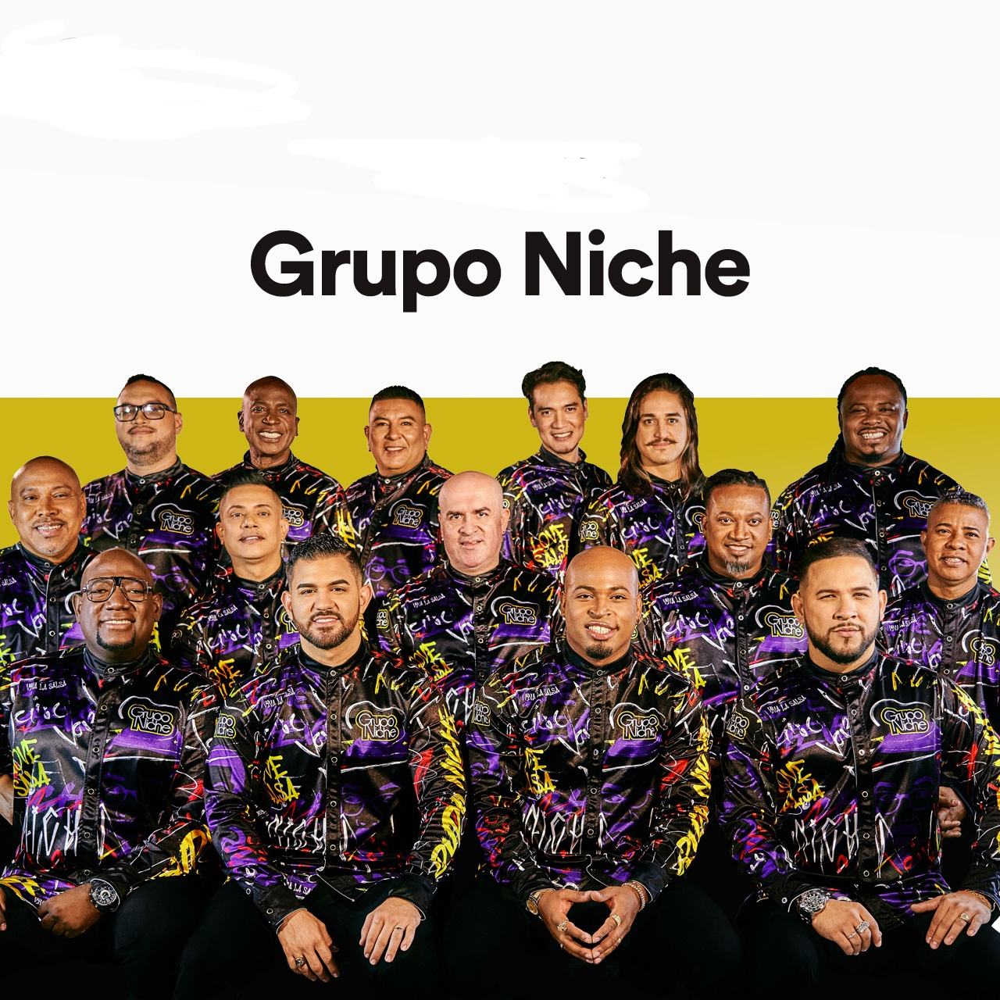

En Santiago de Cali, la música y el baile son más que simples expresiones artísticas, son el alma vibrante de la ciudad.
La alegría se desborda en cada esquina, y el ritmo se siente en el aire, impregnando las calles con un latido constante
que parece resonar en los corazones de los caleños. La melodía une a las personas, mientras los cuerpos se mueven en sincronía,
formando un lenguaje propio que trasciende palabras y une generaciones. Es un carnaval perpetuo de emociones donde cada
movimiento celebra la vida y la identidad de una cultura orgullosa y apasionada.
La musica y baile más conocido de la ciudad de Cali es:
SALSA CALEÑALa salsa caleña es conocida por su ritmo rápido y sus movimientos acrobáticos. |
 |
|
La salsa caleña es vibrante y dinámica, y está marcada por su energía inconfundible. Instrumentos como trompetas, trombones y congas dominan, creando un sonido lleno de vida y ritmos hipnóticos. Las letras a menudo capturan el espíritu de Cali, narrando historias de amor, nostalgia y el día a día en la ciudad. Las bandas locales como Grupo Niche y Orquesta Guayacán se han vuelto emblemáticas, llevando la salsa caleña a un escenario internacional. El estilo musical destaca por sus arreglos complejos y cambios de ritmo que mantienen la atención del oyente. Es una música que te atrapa desde el primer compás y no te suelta. |
Grupo NicheGrupo niche, fundado en 1980 por el maestro Jairo Varela, es un grupo de salsa colombiano que no solo puso a Colombia en el mapa de la salsa mundial, sino que también rompió barreras musicales con sus arreglos innovadores y letras cargadas de sentimiento y realidad social. Su impacto ha trascendido fronteras, llevándolos a giras internacionales y llenando estadios con seguidores devotos. La fusión de ritmos afrocaribeños con melodías colombianas creó un sonido único que resuena en la cultura y en el corazón de muchas generaciones. |
 |
Algunas canciones de Grupo Niche:
|
Cali Pachanguero |
Del Puente Para Allá |
Cali Ají |
Más sobre Grupo Niche:
Grupo Niche - Wikipedia
Más información sobre la salsa caleña:
La Salsa Caleña… Única En El Mundo
La Salsa Caleña, Un Patrimonio Cultural